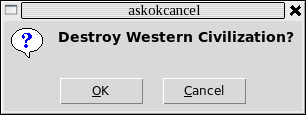
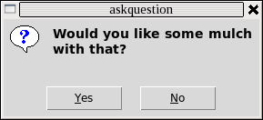
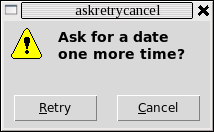
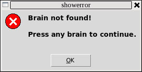
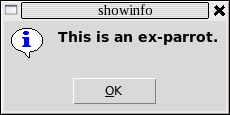
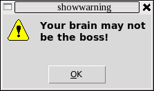

Tkinter 8.5 reference: a GUI for Python |
Tkinter 8.5 reference: a GUI for Python |
Once you import the tkMessageBox module,
you can create any of these seven common types of pop-up
menu by calling functions from this table.
|  |
.askokcancel(
|
|  |
.askquestion(
|
|  |
.askretrycancel(
|

|
.askyesno(
|
|  |
.showerror(
|
|  |
.showinfo(
|
|  |
.showwarning(
|
In each case, the titlemessage'\n')
characters.
The option
default
Which button should be the default choice? If you do not specify this option, the first button (“OK”, “Yes”, or “Retry”) will be the default choice.
To specify which button is the default choice, use
default=, where CCtkMessageBox: CANCEL,
IGNORE, OK, NO, RETRY, or YES.
icon
Selects which icon appears in the pop-up. Use an
argument of the form icon= where IItkMessageBox: ERROR, INFO, QUESTION, or WARNING.
parent
If you don't specify this option, the pop-up
appears above your root window. To make the pop-up
appear above some child window W, use the argument parent=.
W
Each of the “ask...” pop-up
functions returns a value that depends on which button
the user pushed to remove the pop-up.
askokcancel, askretrycancel, and askyesno
all return a bool value: True for “OK” or
“Yes” choices, False for
“No” or “Cancel” choices.
askquestion returns u'yes' for “Yes”, or u'no' for “No”.